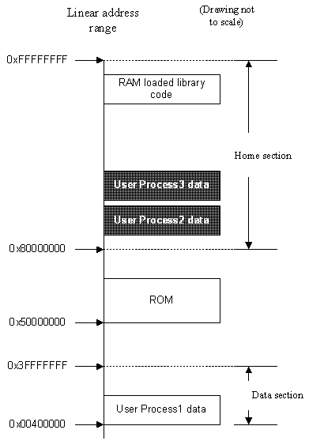
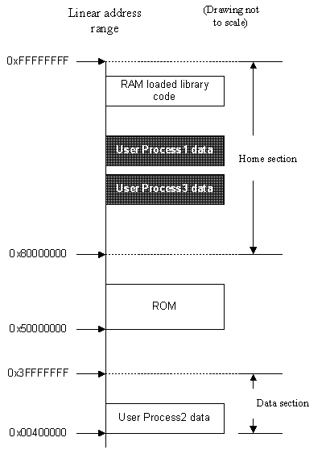

|
| |
The Kernel provides a 'virtual machine' environment to user processes. Each process accesses its data in the same linear address range, called the data section, which ranges from:
0x00400000 to 0x3FFFFFFF
but note that the static data always appears at:
0x00400000
The code chunk for RAM loaded processes always appears at:
0x20000000
This allows multiple processes to run, each executing the same code (e.g. multiple word documents open at the same time, each in a separate instance of the word application) where the same code chunk is used for each of the processes. This reduces RAM usage.
In effect, each user process has the same kind of view. Code instructions address data using the linear address; the Memory Management Unit (MMU) is responsible for the translation of the linear address to the physical RAM address.
Clearly only one chunk can occupy a given linear address range at a time, so a context switch between different processes involves re-mapping the chunks. The process chunks of the old process are re-mapped to their home addresses. These are in the home section, which is the linear address range from:
0x80000000 to 0xFFFFFFFF
ROM code is normally mapped into the address range:
0x50000000 to 0x5FFFFFFF
The process chunks of the new process are mapped from their home addresses back to the data section. Chunks which are not accessible by the current user process reside in the home section, and they have supervisor mode only access permissions, so that only the kernel can access them.
The Kernel's data and stack/heap chunks also reside in the home section. These are never visible to user processes. Code chunks for RAM-loaded libraries reside at the top end of the home section and have user read-only access, so that all user processes can execute code from a loaded library.
A context switch between processes thus involves:
moving the old process chunks to the home section, and changing their access permissions to supervisor-only
moving the new process chunks to the data section and changing their access permissions back to user-accessible.
This is best seen graphically. In the first diagram shown below, user-process 1 is running and can 'see' all chunks in the clear boxes. Those boxes with dark background represent chunks which are not visible to user-process 1.
When user-process 2 is running, the context switch re-maps the user-process 2 data to the data section and user process 1 data is re-mapped to the home section as the second diagram shows.

User process 1's view.

User process 2's view.
Copyright ©2002 Symbian Ltd. 6.1-00174 |
|